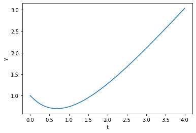

Numeriske biblioteker¶
1. Løse likninger¶
from scipy.optimize import root_scalar
def f(x):
return x**2 - 4
def dfder(x):
return 2*x
# Halveringsmetoden
nullpunkt_halvering = root_scalar(f,method="bisect",bracket=[0,5])
nullpunkt_newton = root_scalar(f,method="newton",fprime=dfder,x0=10)
print(nullpunkt_halvering)
print("-----------------------------------------")
print(nullpunkt_newton)
converged: True
flag: 'converged'
function_calls: 44
iterations: 42
root: 1.9999999999993179
-----------------------------------------
converged: True
flag: 'converged'
function_calls: 14
iterations: 7
root: 2.0
2. Derivere¶
from scipy.misc import derivative
import numpy as np
derivert = derivative(f, 1)
print(derivert)
2.0
3. Integrere¶
from scipy import integrate
x = np.linspace(0,2,1000)
y = f(x)
trapes = integrate.trapz(y,x)
print(trapes)
simpsons = integrate.simps(y,x)
print(simpsons)
-5.333331997329328
-5.333333331995993
4. Løse difflikninger¶
import numpy as np
import matplotlib.pyplot as plt
from scipy.integrate import solve_ivp
def dy_dt(t, y):
return t - y
a = 0
b = 4
t = np.linspace(a,b,1000)
y0 = 1
y_int = solve_ivp(dy_dt, [a,b], [1], t_eval=t)
plt.xlabel("t")
plt.ylabel("y")
plt.plot(y_int.t, y_int.y[0])
plt.show()

Multippel integrasjon** (for spesielt interesserte)¶
Vi løser følgende multiple integraler: $\(\int_0^{\frac{\pi}{2}} \int_{-1}^1 x \sin(y) - y e^x \ dx dy\)\( \)\(\int_0^{3} \int_{0}^2 \int_{0}^1 xyz \ dx dy dz\)$
from scipy import integrate
import numpy as np
def f(y,x):
return x*np.sin(y) - y*np.exp(x)
def g(z, y, x):
return x*y*z
numerisk_dobbel = integrate.dblquad(f, -1, 1, 0, np.pi/2)
numerisk_trippel = integrate.tplquad(g, 0, 1, 0, 2, 0, 3)
analytisk_dobbel = np.pi**2/8 * (1/np.exp(1)-np.exp(1))
analytisk_trippel = 9/2
print(f'Numerisk verdi av dobbeltintegralet: {numerisk_dobbel[0]}')
print(f'Analytisk verdi av dobbeltintegralet: {analytisk_dobbel}')
print(f'Numerisk verdi av trippelintegralet: {numerisk_trippel[0]}')
print(f'Analytisk verdi av trippelintegralet: {analytisk_trippel}')
Numerisk verdi av dobbeltintegralet: -2.899692718238082
Analytisk verdi av dobbeltintegralet: -2.8996927182380823
Numerisk verdi av trippelintegralet: 4.5
Analytisk verdi av trippelintegralet: 4.5